WCAG
Web Content Accessibility Guidelines
Author: Jonas Jared Jacek · License: CC BY-NC-ND 4.0duration: ~30 min
Contents
- Setting
History of the World Wide Web and the work of W3C. - Web Accessibility
Work of W3C for accessibility on the World Wide Web. - WCAG 2.1
Glimpse at the Web Content Accessibility Guidelines.
Teil 1
Setting
History of the World Wide Web and the work of W3C.
History
1968 -first workable prototype of ARPANET1983 -adoption of TCP/IP - birth of the Internet.1989 -Tim Berners-Lee developed the Mesh.1990 -Mesh is renamed to World Wide Web.
World Wide Web (WWW), is called the Web herinafter.
Tim Berners-Lee
Tim Berners-Lee has developed the first website, the first browser and the first web server.
He wrote the first specifications for URLs, HTTP and HTML.
World Wide Web Consortium (W3C)
In 1994, Tim Berners-Lee founded the W3C, a standardization organization for the technologies of the Web.
Mission
The W3C mission is to lead the Web to its full potential by developing protocols and guidelines that ensure the long-term growth of the Web.
Standards
W3C develops hundreds of standards:
- HTML
- XML
- CSS
- SVG
- WOFF
- WCAG
- …
Members
More than 450 organizations are active in W3C.
Extract from the list of members:
- Arron Eicholz, Microsoft
- Alex Danilo, Google
- Edward O'Connor, Apple Inc.
- Jonathan Watt, Mozilla Corporation
- Erik Dahlström, Opera Software
- Anthony Grasso, Canon Inc.
- …
Assertive
- Broad social base
Government representatives, academics, private companies, organizations, … - Open processes
(Mostly) transparent processes, participation / feedback is possible and required. - Free use
Standards are freely accessible, free use, wide distribution is sought.
W3C - Multilingual Web Workshop
 Impression from the workshop at the European Commission, Luxembourg - 2012
Impression from the workshop at the European Commission, Luxembourg - 2012
Teil 2
Web Accessibility
Work of W3C for accessibility on the World Wide Web.
Universal Design
Tim Berners-LeeThe power of the Web is in its universality.
Access by everyone regardless of disability is an essential aspect.
The Web is fundamentally designed to work for all people, whatever their …
- hardware, software
- network infrastructure
- location, language, culture
- physical, mental abilities
Hardware and Software
Inclusion work regarding hardware and software is expressed i.a. through cooperation with manufacturers.
For example: Google, Mozilla, Microsoft, Canon, Siemens.
Network Infrastructure
Inclusion work regarding network infrastructure is expressed i.a. through cooperation with and compatibility with standards of other standardization organizations, e.g. the Internet Engineering Task Force (IETF).
Develops: TCP/IP,
Internet and Web
IETF develops the technologies of the Internet.
W3C develops the technologies of the Web.
Internet
(IETF)
World Wide Web
(W3C)
Location, language, culture
Inclusion work in terms of geographic location, language and culture happens i.a. in the W3C Internationalization (i18n) Activity.
Develops: Guidelines and tutorials for multilingual and intercultural contents.
Physical, mental abilities
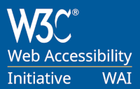Inclusion work regarding physical and mental abilities happens in the W3C Web Accessibility Initiative (WAI).
Develops: ATAG, UAAG and WCAG.
W3C-ecosystem
Working Groups & Task Forces develop standards.
W3C
HTML
Working Group
HTML
...
WAI
WCAG WG
Working Group
WCAG
Components
There are 3 guidelines for Web accessibility:
- Authoring Tool Accessibility Guidelines (ATAG)
- Web Content Accessibility Guidelines (WCAG)
- User Agent Accessibility Guidelines (UAAG)
Authoring Tool Accessibility Guidelines (ATAG)

Web Content Accessibility Guidelines (WCAG)
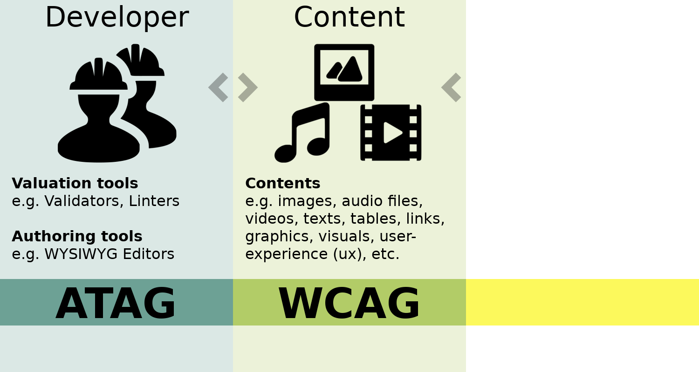User Agent Accessibility Guidelines (UAAG)
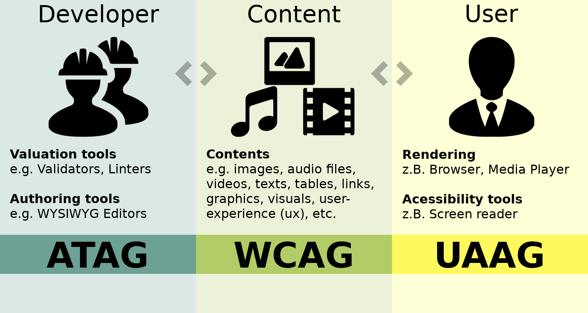Web Accessibility Initiative (WAI)
Group of approximately 150 people from industry, disability organizations, government agencies and research institutions.
WCAG Working Group (WCAG WG)
Extract from the list of members:
- Steve Faulkner, The Paciello Group
- Joshue O Connor, InterAccess
- Loretta Guarino Reid, Google
- Chrystal Jones, Microsoft
- Andrew Kirkpatrick, Adobe
- Tom Babinszki, IBM
- Can Wang, Zhejiang University
- …
Teil 3
WCAG 2.1
Glimpse at the Web Content Accessibility Guidelines.
WCAG 2.1
Web Content Accessibility Guidelines cover a wide range of recommendations for making Web content more accessible:
- visual disabilities
E.g.: color blindness, blindness - auditory disabilities
E.g.: hard-of-hearing, deafness - cognitive, learning, and neurological disabilities
E.g.: multiple sclerosis (MS), attention deficit hyperactivity disorder (ADHD) - physical disabilities
E.g.: rheumatism, arthritis - speech disabilities
E.g.: stuttering, mutism
Multiple disabilities
Some people have combinations of different kinds of disabilities.
E.g. Deaf-blindness, age-related impairmentsHow many are affected?
One billion people, or 15% of the world’s population, experience some form of disability.Worldbank
At a Glance
The following pages contain a paraphrased summary of Web Content Accessibility Guidelines (WCAG) 2.1.
For the normative technical specification, see:
https://www.w3.org/TR/WCAG21/.
Accessibility Principles
Characteristics of accessible Web contents:
- Perceivable
(4 guidelines) - Operable
(5 guidelines) - Understandable
(3 guidelines) - Robust
(1 guideline)
Principle 1: Perceivable
"Information and user interface components must be presentable to users in ways they can perceive."
Principle 1: Perceivable - Guidelines
- Provide text alternatives for non-text content.
- Provide alternatives for time-based media.
- Content must be adaptable.
- Content must be distinguishable.
1.1. Text alternatives
"Provide text alternatives for any non-text content so that it can be changed into other forms people need, such as large print, braille, speech, symbols or simpler language."
The alt attribute on the HTML <img> element is a text alternative.

The audio alternative on captchas ensures content can be perceived, where text is not an option.
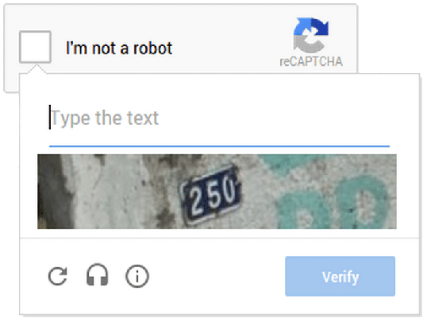1.2. Time-based Media
Provide alternatives for time-based media like audio and video.
The Web Video Text Track (.vtt) provides timed text tracks (captions / subtitles) for prerecorded video contents.
1.3. Adaptable
"Create content that can be presented in different ways (for example simpler layout) without losing information or structure."
Information, structure, and relationships conveyed through presentation can be programmatically determined or are available in text.
In a visual browser, you do not see a colon.
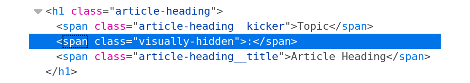In a plain text browser you can see the colon.
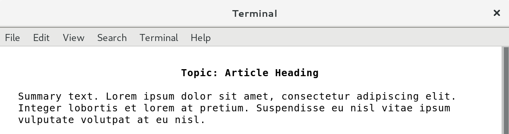1.4. Distinguishable
"Make it easier for users to see and hear content including separating foreground from background."
Color is not used as the only visual means of conveying information, indicating an action, prompting a response, or distinguishing a visual element.
This form is inaccessible for people who are e.g. red-green color blind.

Not only conveying information through color mitigates the problem.
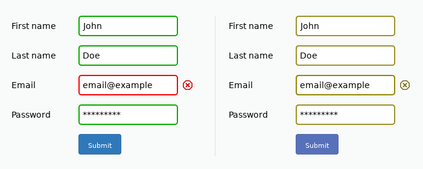Fonts, font sizes and contrasts play an important role in making contents distinguishable.
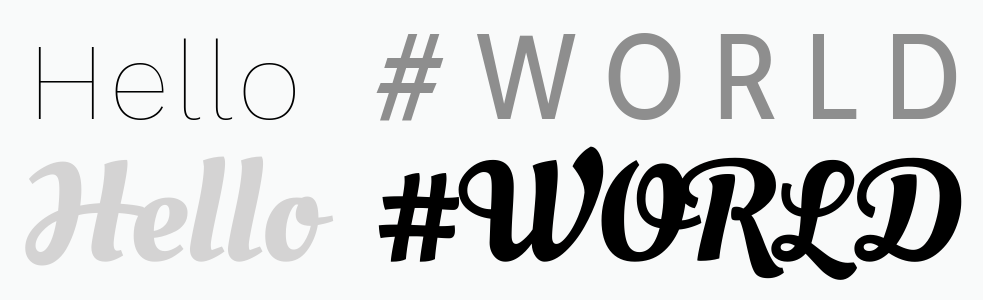Accessibility Principles
Characteristics of accessible Web contents:
- Perceivable
(4 guidelines) - Operable
(5 guidelines) - Understandable
(3 guidelines) - Robust
(1 guideline)
Principle 2: Operable
"User interface components and navigation must be operable."
Principle 2: Operable - Guidelines
- Make all functionality available from a keyboard.
- Provide users enough time to read and use content.
- Do not design content in a way that is known to cause seizures or physical reactions.
- Provide ways to help users navigate, find content, and determine where they are.
2.1. Keyboard Accessible
"Make all functionality available from a keyboard."
(negativ) Beispiel 1: Unzugänglich
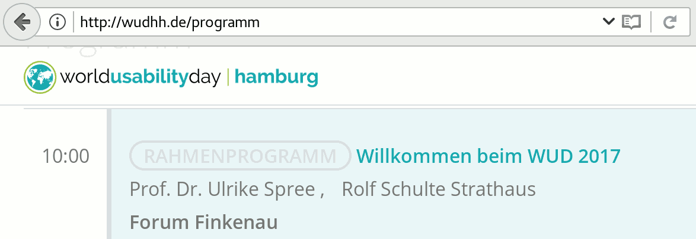2.2. Enough Time
"Provide users enough time to read and use content."
Beispiel 1: Pause, Stop, Hide
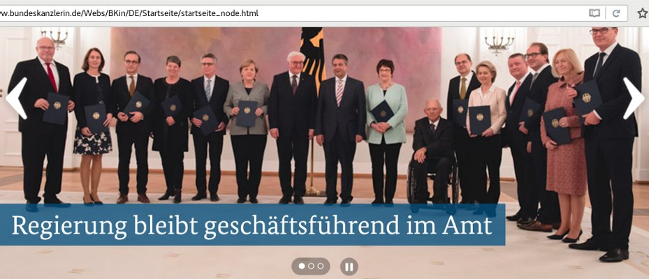2.3. Seizures and Physical Reactions
"Do not design content in a way that is known to cause seizures or physical reactions."
https://www.w3.org/WAI/WCAG21/quickref/#seizures-and-physical-reactions
(negativ) Beispiel 1: Animated Gifs (auch Werbung)
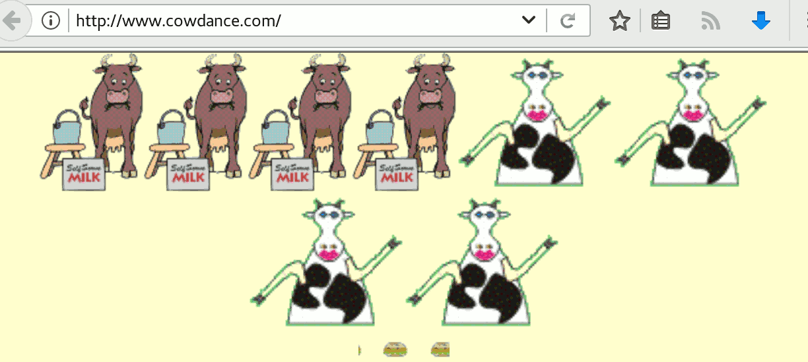Beispiel 1: Missbrauch
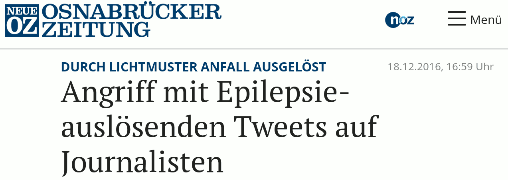2.4. Navigable
"Provide ways to help users navigate, find content, and determine where they are."
Beispiel 1: Skip Navigation
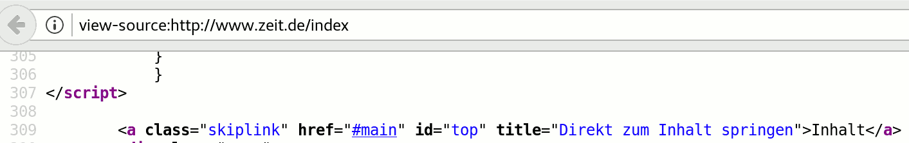Beispiel 2: Breadcrumbs
Accessibility Principles
Characteristics of accessible Web contents:
- Perceivable
(4 guidelines) - Operable
(5 guidelines) - Understandable
(3 guidelines) - Robust
(1 guideline)
3. Verständlich
Allgemeine Anforderung:
"Informationen und die Bedienung der Benutzeroberfläche müssen verständlich sein."
3. Verständlich
Der Grundsatz enthält folgende 3 Richtlinien für Barrierefreiheit:
3.1. Lesbar und verständlich
"Textinhalte müssen lesbar und verständlich sein."
3.1. Lesbar und verständlich
Beispiel 1: Abkürzungen (Abbreviations)

3.1. Lesbar und verständlich
(negativ) Beispiel 2: Sprache
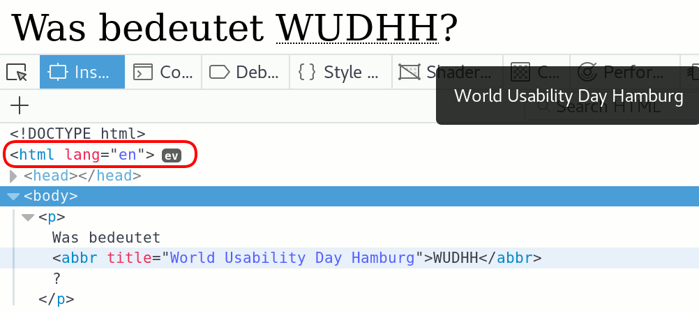3.2. Vorhersehbar
"Gestalten Sie Webseiten vorhersehbar in Aussehen und Funktion."
https://www.w3.org/TR/UNDERSTANDING-WCAG20/consistent-behavior.html
3.2. Vorhersehbar
(negativ) Beispiel 1: Konsistente Navigation
Seit über 10 Jahren ein verlässliches Beispiel für inkonsistente Navigation:
3.3. Fehler vermeiden und korrigieren
"Helfen Sie Benutzern, Fehler zu vermeiden und zu korrigieren."
https://www.w3.org/TR/UNDERSTANDING-WCAG20/minimize-error.html
3.3. Fehler vermeiden und korrigieren
(negativ) Beispiel 1: Keine Text-Fehleridentifikation
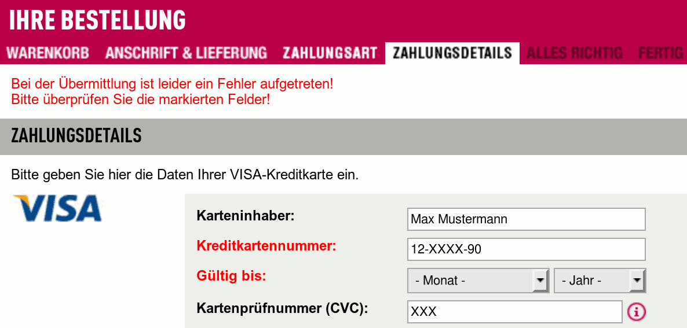Accessibility Principles
Characteristics of accessible Web contents:
- Perceivable
(4 guidelines) - Operable
(5 guidelines) - Understandable
(3 guidelines) - Robust
(1 guideline)
4. Robust
Allgemeine Anforderung:
"Maximieren Sie die Kompatibilität mit aktuellen und zukünftigen User-agents, einschließlich technischer Hilfsmittel für Menschen mit Behinderungen."
https://www.w3.org/TR/UNDERSTANDING-WCAG20/ensure-compat.html
4. Robust
Der Grundsatz enthält folgende Richtlinie für Barrierefreiheit:
4.1. Kompatibilität
Beispiel 1: Validierung [validator.w3.org]
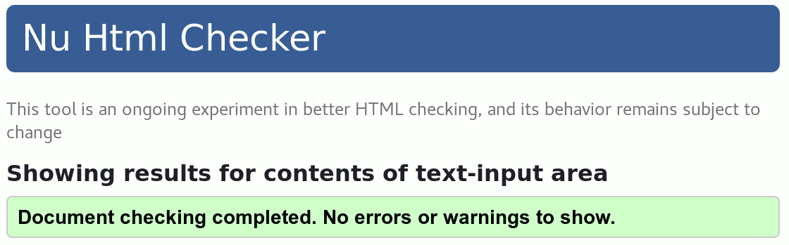4.1. Kompatibilität
Weitere Werkzeuge zur Validierung finden Sie unter:
https://www.w3.org/WAI/ER/tools/
4.1. Robust
Webseiten, vollständig nach aktuellen Spezifikationen entwickelt, sind robust.
Teil 4
References
Sources, references and further reading.
References - Books
- Title
Author - ISBN: XXXXXXXXXXXXX
References - Web
- WCAG Overview
https://www.w3.org/WAI/standards-guidelines/wcag/ - WCAG 2.1 at a Glance
https://www.w3.org/WAI/standards-guidelines/wcag/glance/ - WCAG 2.1
https://www.w3.org/TR/WCAG21/ - Understanding WCAG 2.1
https://www.w3.org/WAI/WCAG21/Understanding/ - How to Meet WCAG 2.1
https://www.w3.org/WAI/WCAG21/quickref/ - Title
#